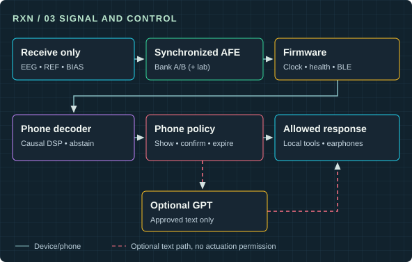

Rexzen Neural / R0
Engineering concept and research release · Revision 0.1 · November 2026
Status: offline public-data experiment and interaction prototype only. No Rexzen wearable has been built or tested. Not a medical device, a product for sale, or an instruction to connect a prototype to a person.
00 / Decision memo
Build a 16-channel scalp EEG liner hidden under a plain cap with a 32-channel interchangeable lab liner; use a separate phone and the wearer's existing earphones. The first product function to validate is a deliberately armed selector for a few known commands. Its output is a proposal; the wearer can review, correct, confirm or cancel it. The commercial hypothesis is that a discreet fit, reliable setup on different hair types and fewer false activations are more valuable at first than a larger classifier or more electrodes. Neither a cap alone nor more AI makes low-quality EEG into high-resolution brain recordings.
- Build first: reusable 16-channel dev acquisition, two short lists of actions, phone-local signal processing, touch/switch fallback, and a clear hardware off state. Fresh user confirmation commits a proposed action. No passive background decoding.
- Test in parallel: 8 / 16 / 32 sensor utility, dry contact and reference stability, day-to-day transfer and the utility of EEG relative to a conventional button, voice or eye-gaze control. A 32-channel research option is not a claim that 32 is better.
- Research only: decoding unseen imagined sentences. At launch, longer requests would be composed from confirmed words/choices or typed, not inferred from inner speech. No claim of parity or superiority to invasive speech BCIs. No release of live competitive game controls or robot actuation.
- What is real today: an offline experiment on public EEG, a browser replay of the interaction and the technical package. No field results, regulatory clearance, margin, supplier readiness or customer traction is implied.
01 / The performance boundary
| Reference | What was demonstrated | What it does not validate |
|---|---|---|
| Willett et al., Nature, 2023 | Intracortical spiking; one participant's attempted speech at 62 words/min, 23.8% word error on a 125,000-word vocabulary.[8][31] | Scalp EEG, unprompted inner speech or population-wide performance. |
| Metzger et al., Nature, 2023 | High-density cortical surface recording; median 78 words/min and 25% median word error for large-vocabulary text in one participant.[9] | Equivalence of electrode counts across recording modalities. |
| Card et al., NEJM, 2024 | One intracortical participant sustained 97.5% accuracy after additional training; approximately 32 words/min in self-paced conversations.[32] | Comparable implanted vs. wearable task conditions. |
| Cell, 2025 | Multi-unit motor cortex recordings from four implanted participants, with real-time decoding of instructed inner speech and experiments on protecting private inner speech.[11] | Unrestricted readout of private thoughts, or feasibility with scalp sensors. |
| Tang et al., Nature Neuroscience, 2023 | fMRI semantic reconstruction of perceived and imagined content; the study assessed subject cooperation.[10] | An exact transcript or a wearable implementation. |
| Brain2Qwerty, Nature Neuroscience, 2026 | 35 healthy volunteers typed memorized sentences; mean character error was 29% with MEG and 65% with EEG.[19] | Silent speech: participants moved their fingers and actually typed. CER is not WER. |
| Nieto et al., Scientific Data, 2022; subsequent preprint audit | An open cued inner-speech dataset enables controlled experiments. A later preprint identified confounds in the dataset's condition labels and artifact-channel effects across corpora.[16][14] | A reliable, moving, open-vocabulary EEG decoder. |
Electrode count is not information bandwidth. Scalp recordings sum activity from many sources through tissue while eyes, muscles, contact, and movement add competing signals. The operating target is correct confirmed commands per worn hour at a fixed false-action rate, not invasive-equivalent WER, bit rate or a best-subject demo. If anyone requests an invasive comparison, test the same task, population and denominator; compare wearability separately from communication throughput.
02 / What the offline experiment actually says
Measured: 16 participants · 48 EDF+ recordings · 720 unique trials. Accuracy (95% participant bootstrap interval):
| Montage subset | Log-bandpower | Log-covariance |
|---|---|---|
| Central 8 | 52.5% (49.4%–55.7%) | 61.0% (56.2%–66.7%) |
| DAY 16 | 52.9% (50.1%–55.7%) | 63.4% (59.1%–68.1%) |
| LAB 32 | 50.4% (47.0%–53.9%) | 59.3% (55.6%–63.1%) |
| Frontal 4, control | 52.6% (49.9%–55.6%) | 54.8% (51.4%–58.0%) |
| DAY 16, shuffled training labels | — | 49.6% (49.1%–50.0%) |
Paired LAB 32 minus DAY 16 covariance: -4.1 pp (-7.0 pp to -1.3 pp). This is not a statistical comparison of electrode hardware.
PhysioNet EEGMMIDB contains 64 channels at 160 samples/s and annotated two-class visual-cued unilateral fist imagery runs; T1 and T2 encode left and right respectively for these runs.[1] We used subjects S001–S016 and runs 04, 08, 12: a fixed convenience subset, not a preregistered trial. Leave-one-run-out within each person; each trial appears in test once. Decode 0.5–3.5 s following the onset of the imagery cue; omit T0 rest. Fit training-only normalization and class templates. Report participant-macro balanced accuracy with participant bootstrap percentile intervals, not a confidence claim for the end product. The NumPy source and raw-file checksums allow the analysis to be rerun; no raw participant EEG is bundled.
Two matched models run on the same splits: standardized log-bandpower nearest class mean at 8–12, 13–20 and 20–30 Hz, versus nearest class mean of log-domain, trace-normalized shrinkage covariances across those bands. The latter adds cross-electrode structure. The four frontal sites are a control montage, not direct EMG or EOG measurement; chance-level label shuffling cannot exclude cue, eye or muscle confounds. This is offline, same-visit and synchronously cued. It neither measures idle false triggers nor validates our liner, an asynchronous switch, dry contacts, walking, speech, free thought, or online app control. Paired 32-vs-16 comparisons use subject-level differences; the experiment cannot say there is an optimal number for other users, windows or algorithms. It justifies testing a focused 16-site product, not shipping a control system.
03 / Industrial design and electrode layout

Form factor. Plain low-profile cap, matte graphite or stone; no flashing accents or exposed leads. The cap is a cosmetic shell and carries no electronics. Inside, an adjustable four-branch liner indexes at forehead, crown and nape; it can be removed for cleaning, service or a different cap shell. The nape pod detaches outward while the cap remains cosmetic. Keep ordinary earbuds, prescription glasses and ears unencumbered. Add a recognizable muted hardware LED visible in a mirror and a physical two-position acquisition switch with a tactile off detent. No hat-on means recording off even if the phone asks otherwise. No microphones/cameras or built-in speaker in the headwear.
| Form or component | Design intent | Prototype verification |
|---|---|---|
| Cap liner (chosen) | Crown reach for C3/C4/Cz plus posterior coverage under a familiar silhouette; removable polyester-spacer knit; optional neutral designs; three fit sizes spanning an initial 52–62 cm head circumference trial envelope | Compare time, willingness to wear in public and contact across head geometry, shaved hair, curls/coils, dense hair, braids, protective styles, glasses and earbud combinations. Never require hair cutting or scalp abrasion. |
| Hairband (alternative) | Attractive and fast to don; weak contact repeatability at the rear unless substantial retention is added | Use as a concept control, not as a substitute for central and posterior coverage. |
| Ear hooks only (rejected for primary mode) | Discreet but the contact geometry does not cover the selected central and occipital montage. Around-ear arrays already exist.[4] | Optional later low-motion task; not a route to more spatial detail. |
| Load-bearing frame | Candidate PC/ABS electronics carrier and replaceable PA12 or molded resilient arms; liner takes the gross load; TPU/elastomer seats decouple cable and pod movement from contact | Off-body jig: force-displacement, structural creep, hair snag, drop, cleaning and wear; avoid post-overmold flex pinch. Materials are candidates, not skin-contact approvals. |
| Electrode cartridges | Keyed small/medium/long captive modules (approx. 3/5/7 mm nominal protrusion fixture settings) for hair, flat pads at hair-free sites. Rounded blunt conductive comb petal or qualified coated polymer candidates; no exposed sharp tips, nickel interfaces or aggressive scalp prep | Initial off-head design sweep: 0.2–0.4 N preload per cartridge in nominal jig, about 2 mm usable travel within a 3 mm stop envelope. Measure contact patch and local pressure, not just spring force. No safe human limits inferred from this jig. |
| Reference and body bias pads | Separate contacts under left and right mastoid tabs, with long strain relief and distinct connector keying. Bias is a common-mode circuit, not digital ground or a stimulus output | Treat both as system-critical: reference or bias health fault stops inference regardless of classifier score. Compare pads on dry and wet rigs; inspect under hair and earpiece motion. |
| Pod and textile | Concept envelope ≤62 × 33 × 15 mm nape pod, no cell pressure against head; mass target ≤110 g including shell and excludes earbuds. Lift tab removable with gloves; keep seams away from scalp contacts | Verify comfort while upright/seated, head turn, walking and against a headrest; plan passive shedding of sweat; do not claim ingress resistance before lab testing. |
Channel allocation. DAY = 16 simultaneously sampled differential scalp channels relative to an analog reference plus REF and BIAS: 18 skin contacts, no implanted sensors. LAB = 32 scalp channels (same DAY montage plus 16 additional sites), same REF and BIAS, optional two independent bipolar artifact channels (+4 contacts). Thus 34 passive scalp/body contacts without auxiliaries, 38 total including optional EOG/EMG. The accelerometer is not an electrode. The coordinate drawing is a symbolic top view, not placement on an individual. For the first verification run locate true 10–10 sites from nasion, inion and preauricular landmarks; mark and record normalized liner offsets. Aim for ≤5 mm repeated-placement error as a design goal; confirm actual position and repeatability on each size. A pair removed from the map is not replaced by a model-generated electrode. See electrodes.csv for indexed sites and AFE banks.
Fit co-design hypothesis. Start with a fixed, experimentally documented Day map. For each liner size and cartridge, collect quality and comfort as the wearer dons the cap; fit adjustments are manual. Do not actuate pins or sweep physical pressure based on software. Build a persistent contact profile indexed by site and hardware revision; derive a short-lived per-window mask and ordered re-seat suggestions. Estimate marginal task benefit and correlated loss (e.g., neighboring sensors failing together) from a study split, then choose the smallest montage that clears preregistered safety, coverage and subgroup criteria. Store the montage and mask with predictions but transmit no raw waveform to a language model. A/B: fixed fit/fixed decoder → fit guidance only → masked decoder only → both; use counterbalanced wear order, identical thresholds and label budgets. Retain a variant only if task coverage at equal false activation and comfort improves on unseen fit sessions. This is a testable combination hypothesis, not a patent claim.
04 / Electronics, power and firmware

Reference topology. Rev A bench acquisition uses 2× TI ADS1299 for DAY; LAB adds two identical synchronized banks and an optional dedicated auxiliary ADC. TI specifies 24-bit simultaneous channels, 250 to 16,000 samples/s, 4.75–5.25 V analog supply and 1 µV peak-to-peak input noise under its 70 Hz datasheet condition.[2] These are IC figures, not the wearable's signal/noise specs. Start single 5 V analog / 3.3 V digital, VREF = 4.5 V, gain 12, 250 samples/s; test gain 6/12 with motion and electrode DC offsets before considering higher. Modify only offline between acquisitions or through a signed configuration update that drops the model arm state. At gain 12 an ideal ±0.375 V full-scale differential range does not waive PGA common-mode headroom limits. Use one synchronous oscillator and routed START, common monotonic sample count, separate CS/RDATA on one deterministic SPI bus, per-bank DRDY capture, and cross-bank timing verification with a fixture waveform. Never parallel output drivers. The lab 500 Hz mode is optional after validation. Do not treat the 24-bit code width as effective resolution.
Input through RF. Route dry leads in a guarded, strain-relieved passive flex harness into the rear AFE, target ≤170 mm longest analog route and test 100–200 mm coupons. Keep analog lead loops small; no USB, RF, antenna, DC/DC switch node or high-speed clock traces under sensitive leads. Put protection/ESD devices at ingress and require leakage, noise, fault-current and RC analyses with component tolerances and simulator. Design balanced impedances and clean surroundings for high-impedance nodes; route separate protected shared reference fanout to the banks and characterize both reference buffering and bias drive stability at worst RC. Compare passive harness against an active buffer coupon if long leads fail noise/motion/CMRR; record power and added fault paths. Only the reviewed schematic may define actual current-limiting values and applied-part barriers. Use a shorted-input test, separate common-mode injection, source imbalance/offset sweep, line interference and motion coupling. Avoid relying on vendor CMRR for the assembled system.
| Assembly | Candidate choices and layout | Acceptance direction (not measured) |
|---|---|---|
| AFE/flex | Rear 4–6 layer rigid AFE board with two dry harness connectors, plus lab daughtercard retained under cap; dedicated analog LDO after step-up; continuous plane with controlled return regions; shield experiment, no floating high-impedance inputs | ≤2 µV RMS referred-to-input across 1–40 Hz shorted and ≥80 dB assembled CMRR at 50 and 60 Hz under a documented impedance imbalance fixture; fail if bias/reference loss does not stop proposals. |
| Radio and compute | Pre-certified Nordic nRF5340 module candidate; Zephyr BLE peripheral; 6-axis ST LSM6DSV16X family candidate sampled at 100 Hz; keep antenna off head edge, away from analog return/current loops; validate EMC and enclosure integration | p95 source window-end to phone score <150 ms under sustained foreground link, no loss invisibility or stale outputs after radio dropout; distinguish age at action from buffer latency. |
| Power/dock | Candidate protected 650 mAh nominal 3.7 V pack, analog and RF rails isolated by return/layout planning, battery ADC and NTC, ESD and pack supplier evidence. Non-USB-use keyed charging dock, physically off-head; dock contact detect plus hardware isolation that holds acquisition off when charge contacts engage | Two independent ways to keep charging and human measurement mutually exclusive; test both with single faults, sweat and misalignment. Battery supply is not evidence of safe body connection. No charge/use workaround. |
| Inventory/service | Separate fabric, disposable studies' adhesive auxiliary pads, cleanable cartridges, collar harness, sealed pod, charging cradle, certified cell | Bench targets: 500 don/doff cycles, 100 cartridge replacements, 500 dock cycles and 100 validated cleaning cycles before acceptance. Recheck coating, dimensions, cable strain and noise after each stress campaign. |
Power and traffic design worksheet. DAY battery nominal 0.65 Ah × 3.7 V = 2.405 Wh. If 80% aged capacity and 85% usable reserve remain, available is ~1.64 Wh. Preliminary battery-side accounting: 90 mW AFE drawn from converters, 30 mW compute/BLE, 5 mW IMU and monitoring, 10 mW auxiliary/standby interfaces, 25 mW overhead and variance ≈160 mW. Qualification ceiling 190 mW implies ~8.6 h at that derating; no runtime commitment until measured. LAB 270 mW modeled implies ~6.1 h. Additional LAB storage and AUX power are not included beyond that modeled envelope; show measured worst duty and thermal. DAY raw EEG payload 16×3×250 = 12,000 B/s; LAB 32×3×500 = 48,000 B/s. IMU six 16-bit axes at 100 Hz add 1,200 B/s before timestamps/overhead. Prove portable BLE throughput on lowest supported phone, with earbuds simultaneously in use and deliberate packet loss. If LAB raw cannot sustain BLE, log locally to encrypted, service-only storage and send health/preview; do not downsample silently.
Packet sketch. Little-endian header: format_version:u8, profile_id:u8, flags:u16, seq:u32, first_sample_index:u64, n_samples:u8, n_channels:u8, sample_format:u8, fragment_count:u8, then signed packed i24 channel samples and a CRC-32C for complete logical frame integrity (not authentication). Frame uses 4 samples (16 ms at 250 Hz) initially; negotiate ATT MTU and fragment via per-fragment sequence and index where required. Health (per bank valid bits, impedance/stale markers, saturation flags, IMU, battery, temperature, dropped-frame counter) ships separately with the same sample clock epoch. Integrity, LESC pairing, explicit pairing mode, phone authorization, versioning, signed model/firmware bundles and rollback policy are independent checks. Reject reordered, late or duplicate frames; insert a gap flag and invalidate intersecting decoder windows. New pairing, metadata mismatch, model swap, dock detect, switch-off, sleep, brownout, lost connection, a stale timer or insufficient task-site coverage disarm; no buffered command is restored after reconnect.
05 / Model system: solve sensing before language
- Causal DSP. Use a documented 1–40 Hz passband for initial motor/ERP experiments; configurable 50/60 Hz line notch on a sufficiently wide acquisition branch, with startup, frequency and phase response measured. Keep raw samples for opt-in research comparisons, never feed future data into real-time evaluation. Mode-specific causal filters: motor imagery 8–30 Hz, event-related potential (ERP) 0.5–20 Hz with measured trigger alignment, visually evoked only in a screened separate lab setting. Track sample counter, drift, packet validity, ADC rails, spectral line ratio, clipping/jumps, impedance trend and overlapping IMU/EOG/EMG. Estimate impedance using engineering-approved lead-off diagnostics only in precheck/interleaved tagged segments; invalidate contaminated windows. Do not choose good channels by impedance alone. Preserve covariance structure; compare stable-reference processing, robust mean over good channels, and local Laplacians only when the assumed neighborhood is present. Shared-reference failure is not fixed by subtracting an average.
- Baselines matter. Reproduce this package's covariance comparison, then filter-bank CSP/LDA, shrinkage tangent-space ridge, and EEGNet with the same subject/session split. For seated event-related menus try xDAWN plus shrinkage LDA; use actual stimulus onset timestamps, no long sequences of trials randomly split across sessions. For 40-target SSVEP research use CCA, FBCCA and TRCA before a deep model; evoked paradigms are not spontaneous intent.[15][17] No flashing on the public prototype or by default in the wearable. Any later visual stimulation needs contraindication review and ethics approval. Prefer a low-demand touch or accessibility switch when EEG adds no net value.
- Rexzen decoder research. Build a compact streaming temporal encoder (depthwise multi-band conv + causal TCN) and a lightweight graph-attention/transformer layer over 10–10 positions, with coordinates, modality flags, gain and valid-channel masks. Gate out invalid patches before pooling. Train masked time/channel representation and cross-view embeddings on rights-cleared data; objective combines class loss, idle rejection, quality score on artifact controls and teacher distillation. Simulate realistic contiguous packet gaps and adjacent electrode dropout, not just independent Bernoulli masks. Track channel count and missing regions, not infer invented signals. Candidate ~1–3M parameters, quantized only after held-out ablation on phone; measure actual memory, CPU and battery. Compare to montage-compatible EEGPT/LaBraM or channel-flexible backbones; treat checkpoint rights separately. Recent preprint benchmarks caution that model size does not guarantee generalization.[18][29][34]
- Adapt with limits. Keep public train, session holdout, device-fit holdout and first-time-person test separate. Use nested train fits for whitening/reference/scaler and one frozen post-hoc calibration split for scores. Calibrate p(known class), p(idle) and out-of-distribution indicators; generate a risk–coverage curve for every task, user and fit subgroup. During onboarding collect ≥30 labeled prompts per mode in the prototype protocol, then measure setup separately from model calibration. Adapt only by signed user-authorized review, with version rollback; do not train online on its own predictions. Keep abstentions outside the denominator of accepted precision but count them in throughput and total utility. Reject when coverage drops or masks are novel.
- Separate neural, selection and language layers. Trusted phone policy consumes candidates
{intent_id, calibrated_score, quality_flags, montage_id, n_windows, expiry, sequence, source_mode, decoder_version}. No neural score alone dispatches a command.IDLE → ARMED → PROPOSAL → REVIEW → CONFIRMED → RESULT; a physical/accessible switch arms exactly one short session. Show what came from a selection, what was typed, and what AI expanded. If confirmation is needed, use explicit user action with accessible alternatives, not a second uncalibrated model score. Unrecognized, expired, stale, conflicting or degraded state goes to cancel/idle. Timeout and rejection are normal. - GPT and a smaller local model. Ship a local deterministic intent/slot parser, undo and phrase templates first; optional local language model can rank/compress suggestions after selection, never touch the policy. With opt-in, send only the exact user-reviewed text or allowed text slots to a server endpoint; no raw EEG, neural embedding, waveform, electrode telemetry, calibration, or unsolicited context. Use GPT with a strict typed schema for
reply_text,intent_id,slots,needs_clarification; Structured Outputs is a formatting mechanism, not truth or authorization.[5] Cap length, validate schema locally, treat content as untrusted and require confirmation before any device action. Provider requests should use appropriate retention controls after DPA/terms review; no universal zero-retention promise. Read ordinary replies in local TTS through the wearer's earbuds; select private device route or stay silent, do not fall back to loudspeaker. Raw audio does not go to GPT for EEG use. The shipped browser replay uses canned text, not GPT or a live decoder.
06 / App and practical workflows
| Mode | Demonstrable interaction / eventual MVP | Boundaries and usability tests |
|---|---|---|
| Ask in earphones | Arm → choose question topic / add confirmed slots → review full draft → confirm → audio reply and optional readable transcript. Example review: “Break down the trade-offs between a 16-electrode wearable design and a 32-electrode lab setup, then suggest the first three experiments.” In R0 this is a preset; future inputs compose over time or use optional typed entry. | Measure time including edits and repeats, not just neural window. If user intent is ambiguous, ask rather than guessing. First-audio cloud service p95 target ≤3 seconds after submit in a named network profile; local prompts and cancellation must work offline. |
| Chess | Pick between a few legal destinations; app board state restricts legal moves, validates state version/rules and asks for confirmation. The replay offers a legal opening move from a fixed initial board. | Start with a board in the app; no external engine assistance in competitive play. Gaze/touch benchmark and fallback. Record correct moves per minute including undo. |
| FPS and VALORANT | EEG is suitable to test sparse menu or squad options in our own simulator, not to aim, shoot or replace low-latency continuous controls. Demo uses only a local practice-menu selection. | No hooking, key injection, macros or anti-cheat interference. Seek Riot's written direction for a compliant accessibility route before any actual client integration. Riot's developer policy prohibits products that create unfair advantages.[28] No such permission assumed. |
| Robot | Initially simulator-only: two allowlisted high-level tasks, e.g., return_to_dock. Show target and require review. Later certified robot controller receives bounded goals with expiry, state version and geofenced workspace ID. |
Independent hardware stop, local watchdog, obstacle handling and safety-rated controller where required; never expose velocity or execute model-authored code. Nav2's Collision Monitor is an additional software layer, not a replacement for the independent safety chain.[33] Motion must not resume automatically after loss/reconnect. |
Phone experience. Setup chooses profile, shows an anatomical contact map and actionable prompts (“reseat left crown”, “use touch while walking”), validates earphones, then offers simple actions with a clear cancel. Modes: off, diagnostics without action, armed, review, result/fault; phone and physical switch agree on state. Accessibility: switch-control and screen-reader semantics, large buttons, neutral audio states, configurable feedback, and conventional fallback. For every release verify no capture when unpaired or off, no network on local mode, no auto re-arm, no default account requirement and no unrecoverable flow when one channel fails. Never normalize retention across users: raw off by default; opt-in research capture separately labeled, encrypted and deletable.
07 / Data, code and what to build ourselves
| Asset | Use as-is / evaluation plan | Not interchangeable |
|---|---|---|
| PhysioNet EEGMMIDB, ODC Attribution v1.0 | Shipped R0 replay benchmark and manifest.[1] | Not cross-day nor Rexzen sensors. No redistribution of EEG here. |
BCI Competition IV 2a (BNCI2014_001) |
Held-out session motor-imagery comparisons; report left vs right separately from four-class and use two-day protocol.[26] | Lab task, cap and domain differ. Check dataset terms before any commercial training. |
MOABB BI2015a |
ERP target/non-target, session transfer and asynchronous gate development with separate idle collection.[27] | Cued ERP is not speech; verify timing and repository/dataset-specific terms. |
| BETA | CCA/FBCCA/TRCA comparison and posterior montage ablation; analysis only by default.[17] | Cued flicker in 40-target setting, not wearable idle nor speech. |
| Thinking Out Loud and Kara One/competition audit | Closed-vocabulary negative-control work; hold out participant/session and cue blocks, measure artifact-only predictions; avoid using condition identity as speech evidence.[16][14] | A few instructed labels ≠ unseen conversation. Treat published benchmark numbers as task-specific. |
| MNE-Python, MOABB, Braindecode, BrainFlow | Reuse ingest/QA, dataset adapters, and trainable baselines.[21][23][24] Use BrainFlow for uniform bench-board adapters.[22] | Pin versions; code, dataset and checkpoint rights are different; upstream repos are not Rexzen code. |
| EEGPT / LaBraM, compact specialist models | Evaluate frozen features vs trained adapters vs baseline with equal budget; report weight-license provenance, overlap with evaluation datasets and device holdouts.[29][34][18] | Do not assume larger pretraining or a published checkpoint means more interpretable neural signals. |
The only data investment that can settle the product is repeats from the actual industrial design: recorded channel quality, full timestamp chain, independently synchronized artifact sensors in LAB, wet reference within a counterbalanced session, daily wear conditions, fit variation, negative idle and genuine user task completion. Use audit-only AUX channels for artifact checks, not for advertised EEG-only features. Reference recordings and cap variations should be randomized and labeled, with blinded scoring where possible. Build our own fit/quality schema, model evaluation, confirmed-intent protocol, data provenance and mechanical guide. Outsource safety/regulatory and molding specialists; use available electrodes and amps for experiments before custom ADCs or integrations.
Long-sentence kill test. After board safety approval, preregister an explicit opt-in thought interval, prohibit overt speech in the covert condition, with randomized novel text and semantic distractors, no audio feedback until trial end, counterbalanced prompts and silence. Keep physically disconnected/mismatched and shuffled EEG, LM-only without metadata, cue-only, microphone/EMG/EOG/IMU-only, prompted overt positive controls and artifact-desynchronized comparators. Lock model and language priors before held-out scoring; hold out sessions, people and entire prompt families with no close paraphrases. Report WER/CER, exact match, speech content fidelity, chance, null results, and public/scalp disambiguation. Early trial: stop a speech claim if matched-condition EEG does not improve over the strongest artifact-only or text-only baseline at fixed false activation/coverage on a locked test, replicated on a new day and independent cohort. Never relabel composed GPT suggestions as read thoughts. No passive inference, covert collection, employee monitoring, cognitive scoring or third-party profiling.
08 / Requirements, risk and validation gates
| Gate | Proposal: measure before advancing | Stop rule |
|---|---|---|
| G0 — unpowered fit & bench safety | Fitting dummies and phantoms; electrical design/fault analysis, materials evaluation, charging interlock; complete leakage, EMC and battery plan with qualified lab | No on-body acquisition until named safety owner, protocol approval, bench sign-off and independent test plan. No mains, USB, oscilloscope or charging connection on a person. |
| G1 — paired feasibility | Target n=24 consenting adults across 3 days, randomized dry vs wet and explicit stratification of fit/hair. First gate: ≥80% participants able to self-don within 90 s by day 3, excluding separately timed calibration; ≥90% seated trial time with enough valid task sites; log data per subgroup and collect skin/comfort outcomes. Wet reference and dry liner differ in reference placement/fit; log and account for both. | Pause for any related skin injury, significant discomfort, unexpected study event or severe subgroup failure. Adjudicate before resuming. Drop unusable electrode zones instead of tightening blindly. |
| G2 — first real utility | Target n≥40 in locked confirmatory design, size separately for precision and effects. Gate: ≥90% accepted-selection precision seated and ≥70% coverage; target ≤0.25 false proposals/hour while armed but idle, report one-sided 95% rate with subject clustering, event definition, denominator and workload. Measure end-to-end task latency and compare a switch-only baseline. | If fewer than useful participants beat switch-only on completion/effort or product safety cannot be bounded, narrow to opt-in specialist mode or stop. No pooled accuracy hiding subgroup disparities. |
| G3 — wear, transport and manufacturing | Refit between days and batches; test standing, seated, head turns, transit and active walking as separate strata; enrolled users can turn sensing off anytime. Targets: ≥8 h aged DAY runtime, ≤110 g all-up, no uncommanded side effects, passes bench and third-party product tests. | Hold motion decoding off if quality criteria fail. Do not ship based on test-set tuning, a single-person showcase, or failure to observe a rare event over too few hours. |
| G4 — field/market | Optional program for adult users and developer labs with supervised use, open issues and clearly labeled demo, manual fallback, and return/support channels. Expand only after user utility and independent product reviews. | Never route to a physical robot or accessibility-critical setting until the respective integration and approvals clear. |
Metrics. Report task success across everyone enrolled, start-to-correct-action p50/p95 including confirmation, accepted precision vs coverage, false proposals and committed false commands separately, wear-hours and armed idle hours separately, packet-loss/motion dropouts, adverse events, re-dons, setup p50/p90, comfort and actual willingness to wear weekly. Use subject-cluster intervals; predefine minimum detectable improvements and equivalence margin with a statistician. Zero events in 12 armed idle hours gives an approximate one-sided 95% Poisson upper bound of ~0.25/hour assuming independent homogeneous events. This is a lower planning bound, not enough for clustered wear data or safety-critical control; use longer and multi-user sessions. Do not count idle time while physically disarmed toward a classifier's idle metric.
| Risk | Engineering control / observable verification |
|---|---|
| Electrical/charging/skin hazard | Receive-only electrophysiology plus regulated measurement diagnostics, body bias limited by reviewed circuit; independent keyed charger interlocks, no on-body mains; verify single-fault leakage, skin contact materials, pressure and cleaning under qualified review. |
| Motion, false detection or wrong source | Motion severities separately measured, artifact sensors and controls, minimum valid ROI, reject bad reference, explicit review, watchdogs and manual fallback. No promised decoding while running, driving or cycling. |
| Photosensitivity, distraction or public discomfort | No public flicker; study-only visual stimuli screened/consented with immediate terminate; private audio only when routed as intended; breakaway fit; user-turn-off designed in. |
| Device loss, malicious content or data linkage | Encrypt local research exports, keys in OS secure storage, signed profiles and firmware, paired-only service, no neural data in application logs or crash reports; restrict app telemetry and audit retention/deletion. Data can remain sensitive after identifier removal. |
| Robot or power-user misuse | No actuator in launch demo; independent reviewed robot safety stack, reset/E-stop on physical controller, minimum permissions and expiring typed tasks. Do not gate emergency stop on EEG or a network path. |
Responsible research / markets. Obtain qualified review of intended use, risk class and claim wording in each planned market before exposing anyone to a prototype or putting it on sale. This consumer interaction concept is not positioned for diagnosing, treating or rehabilitating disease; that wording does not itself settle classification. Electrical/EMC, battery/transport (e.g., IEC 62133-2 and UN 38.3 as applicable), radio (FCC/RED as applicable), skin contact, ingress, repair and accessibility require jurisdiction and product-specific reviews. If medical intended use is pursued, plan a separate review for ISO 14971, IEC 60601-1/-1-2, the applicable EEG particular standard, 62304, 62366-1, 10993 evaluation and clinical pathway; none is claimed. For EU users assess GDPR lawful basis, DPIA, provider contracts and Article 9 when processing data concerning health/other applicable special category data; separate consent for hardware usability research, speech research, model training and optional cloud features.[25] Retain raw locally only under opt-in with explicit purpose; proposal default: delete session raw after 30 days unless protocol requires retention and sponsor/consent agrees. Never monetize or share neural data with ad brokers. Cross-border transfers and rights of deletion/withdrawal need protocol- and jurisdiction-specific rules. Exclude minors in initial pilots. Public report, code and per-subject summary do not authorize model or data rights beyond original terms.
09 / First-principles build order and manufacturing handoff
Question → delete → simplify → shorten loops → automate. Treat requirements as falsifiable user outcomes. Delete active electrodes, auto-pressure, custom earbuds, raw cloud streaming, multi-class inner speech and gaming injection from V0. Prototype only the mechanisms that reduce measurement uncertainty; shorten loops with removable cartridges, reciprocal fit checks and standardized jigs. Automate only stable end-of-line tests. Add complexity only when a blinded A/B at equal false activation and comfort pays its engineering, energy and service cost.
| Phase (indicative weeks, not launch dates) | Output and decision owner |
|---|---|
| W0–4 / feasibility bench | Signal lead: replay and independent MOABB replication. Hardware lead: taped dummy fit articles, passive and active harness coupons and open isolation/test plan. Product lead: benchmark switch/touch workflows. Stop if the expected utility case can't be articulated and measured. |
| W5–10 / EVT | Electrical lead: schematic ERC, verified lab-only capture boards, test-point map, clean reference/bias and synchronized AFE/IMU; mechanical lead: 3 fit sizes, pressure maps/retention fixture; app lead: instrumented disconnect, review, local audio. No on-body testing until G0 sign-off. |
| W11–18 / permissioned pilot | Lab lead: ethics-approved paired sessions; operator scripts and adverse-event stop; science lead: locked per-day splits and report with uncertainty; design review selects Day map or simpler baseline. |
| W19+ / DVT/PVT | Verify materials, production test plan, radio/battery compliance, reliability and cleanability. DVT engineering builds use traceable build records; no purchase order for volume tooling until fit and yield clear. PVT: controlled pilot lot, sampling, end-of-line results and failure dispositions. |
Purchase and assembly. bom.csv is an initial planning estimate in USD at 5,000 units, not distributor quotes; ask two suppliers each for AFE/module, cell, textile and molded carriers. Request candidate skin-contact and lot characterization and battery safety evidence. Freeze exploded drawing, tolerance stack, mechanical material/coating, finalized schematic and stackup, strain relief path, antenna placement, DFM checks, unique serialized board+liner traceability, pairing fixtures, and rework procedure at DVT. For CM RFQs include Gerbers/ODB++, pick-place, tested assembly note, pad-stack and connector drawing, parts substitution approval, AQL and test logging. At EOL: inspect cartridge identity and spring travel; flash signed firmware and immutable board identity; confirm ADC configuration readback and shared timing; inject per-site tones for polarity/noise/dropout; verify contact interlock, BLE, IMU, current, charge and thermal flags; save only manufacturing metrics and serial, never human data. Set fixture GR&R targets before using it as a yield gate. Revise costs with actual yield/scrap, warranty, channel, duties and support.
Initial business case. Beachhead: research/developer kits and accessibility-input partnerships in nonclinical settings; sell ease of fit and reproducible interactive performance only once measured. Candidate sell price $399, contingent on willingness to pay and landed costs. Run partner discovery and an ethically approved pilot before announcing any traction. bom.csv models $131–$196 per assembled unit plus excluded landed/support costs, and 101 g nominal worn mass before margin; quote economics and customer-acquisition/support costs before selecting channel. Illustrative financing plan (not a fundraising target or offer): $750k milestone budget reserved $270k hardware and DFM, $225k app/signal stack, $135k participant research and privacy/safety validation, $120k contingency and field operations. Evidence milestones: bench sign-off, multi-day reliability, comparative user utility, fit/manufacturer and cost validation. No shipping timelines, investments or IP litigation status asserted.
Prior art and disclosure. Commercial dry-headset vendors advertise up to 19 channels; OpenBCI already supports around-ear arrays.[3][4] Patent publications describe compliant electrode structures, contact feedback and impedance-informed actuation.[6][7] Do not pitch dry electrodes, springs, EEG + AI, or sensing under clothing as patent novelty. The thesis worth testing is reliable useful coverage through a standardized removable fit system plus explicit abstention that degrades safely. A defensible business outcome would be lower setup and fewer false actions than an appropriately matched wearable baseline; product test, not patent language. No freedom-to-operate opinion or patentability search has been performed; search relevant claims, continuations and jurisdictions with counsel. This public release is a disclosure and may affect filing rights; no proprietary manufacturing process or confidential human data is included. A production design needs released ECAD, mechanically toleranced CAD and independent verification; this R0 package is an engineering starting point, not a production release.
Sources
- [1] EEG Motor Movement/Imagery Dataset v1.0.0
- [2] ADS1299 data sheet, product information and support | TI.com
- [3] Home - Wearable Sensing | Dry EEG
- [4] cEEGrid Kit | OpenBCI Documentation
- [5] Structured model outputs | OpenAI API
- [6] US20190000338A1 - Method and system for obtaining signals from dry eeg electrodes
- [7] US11622709B2 - Headset and electrodes for sensing bioelectrical potential and methods of operation thereof
- [8] A high-performance speech neuroprosthesis | Nature
- [9] A high-performance neuroprosthesis for speech decoding and avatar control | Nature
- [10] Semantic reconstruction of continuous language from non-invasive brain recordings | Nature Neuroscience
- [11] Inner speech in motor cortex and implications for speech neuroprostheses.
- [14] How large an effect would we have seen? Positive controls, detection floors and dataset pitfalls in scalp-EEG speech decoding
- [15] [2404.15319] The largest EEG-based BCI reproducibility study for open science: the MOABB benchmark
- [16] Thinking out loud, an open-access EEG-based BCI dataset for inner speech recognition | Scientific Data
- [17] [1911.13045] BETA: A Large Benchmark Database Toward SSVEP-BCI Application
- [18] [2609.32743] Benchmarking EEG Foundation Models at Scale: Lessons from 20,000 Evaluations
- [19] Noninvasive decoding of typed sentences from human brain activity | Nature Neuroscience
- [21] MNE-Python — upstream repository
- [22] BrainFlow — upstream repository
- [23] MOABB — upstream repository
- [24] Braindecode — upstream repository
- [25] Regulation - 2016/679 - EN - gdpr - EUR-Lex
- [26] moabb.datasets.BNCI2014_001 — MOABB Documentation
- [27] moabb.datasets.BI2015a — MOABB Documentation
- [28] Riot Developer Portal
- [29] EEGPT — official upstream repository
- [31] A high-performance speech neuroprosthesis.
- [32] An Accurate and Rapidly Calibrating Speech Neuroprosthesis.
- [33] Nav2 Collision Monitor — upstream README
- [34] LaBraM — official upstream repository